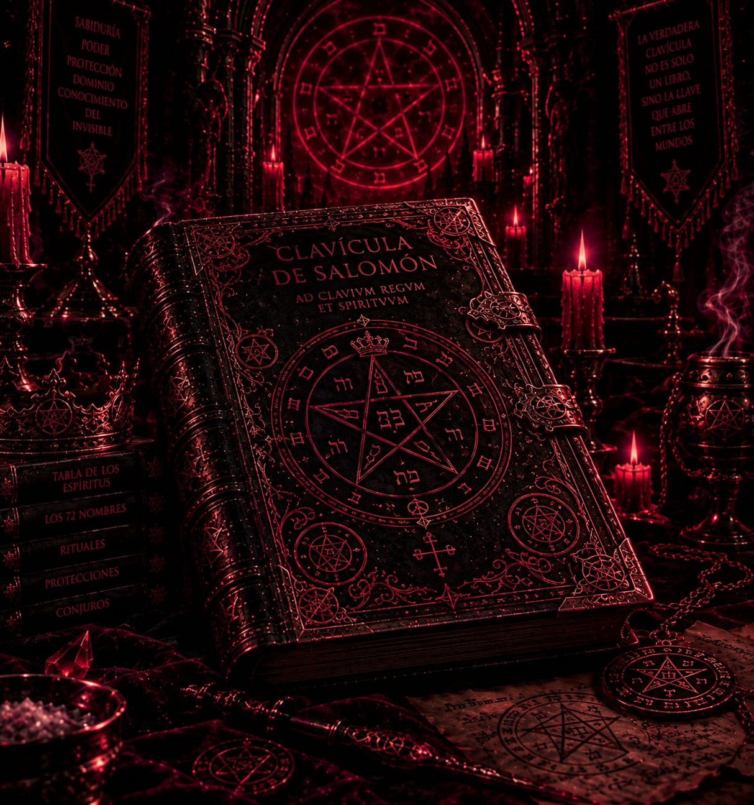

LOS PENTÁCULOS
Figuras geométricas y símbolos inscritos que representan conceptos espirituales y asociaciones tradicionales con diferentes fuerzas planetarias.
ARCHIVO III · GRIMORIOS · REGISTRO 01
LA LLAVE DEL CONOCIMIENTO OCULTO
La Clavícula de Salomón, también conocida como la Llave de Salomón, es uno de los grimorios más conocidos de la tradición mágica occidental. Atribuido legendariamente al rey Salomón, este manuscrito medieval reúne símbolos, oraciones, instrucciones y elementos relacionados con la magia ceremonial.
EXPLORAR HISTORIA VOLVER AL ARCHIVO